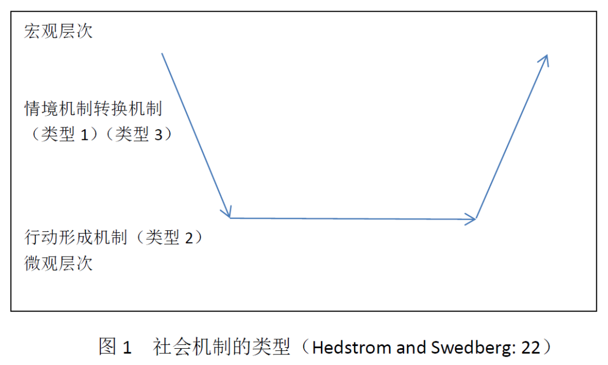
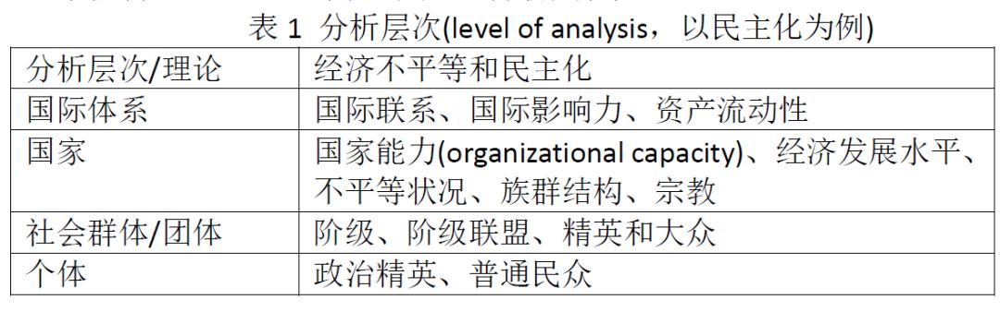
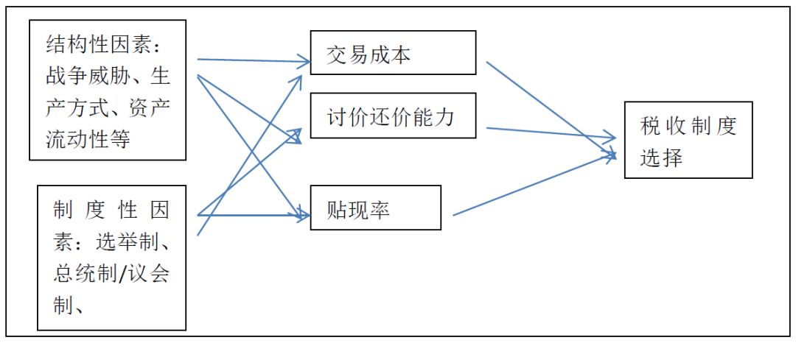
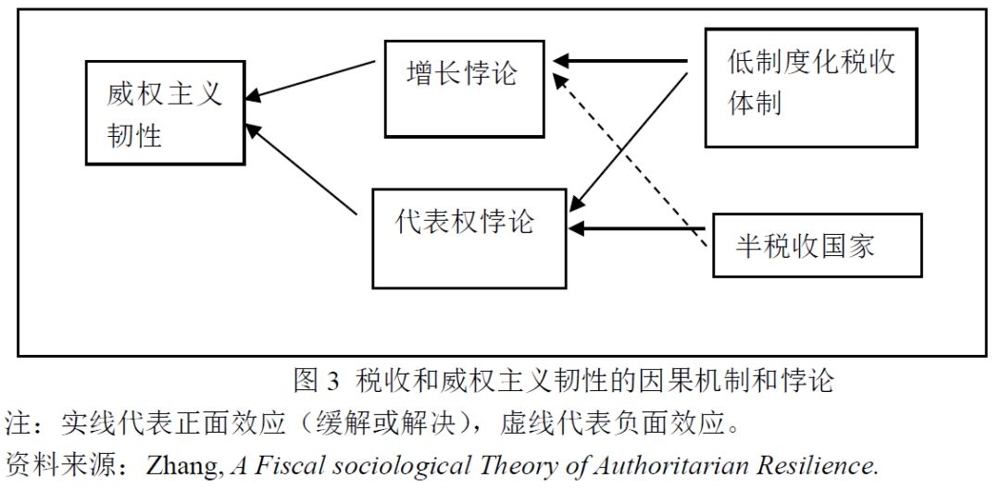
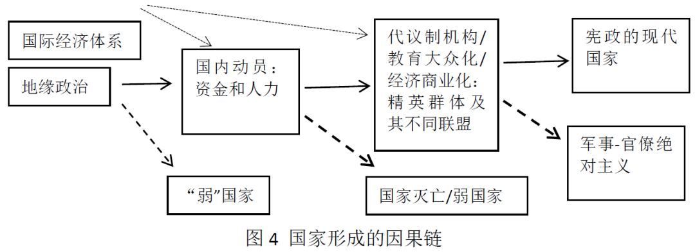

收录于合集
文献来源： 张长东.社会科学中的因果机制:微观基础和过程追踪[J].公共管理评论，2018(01)：10-21.
摘要： 社会科学研究越来越强调寻找因果机制。本文结合具体的研究阐释两种主要的因果机制：微观基础和过程追踪。微观基础主要是通过降低分析层次，并强调行动者的重要性，试图为宏观现象提供微观基础从而连接结构和行动者。过程追踪则强调时间的重要性，强调因果链和偶然性，也能将行动者纳入，并能强调因果关系的双向性。最后文章讨论了因果机制存在的困难和挑战。
关键词 ：因果机制；微观基础；过程追踪；因果链
社会科学尤其是政治学和社会学的研究中，近三十年来逐渐开始强调从寻求“因果关系”到“因果机制”的转变。从方法论上的倡导，到具体的实证研究中的应用和发展，因果机制的重要性逐渐凸显，并成为衡量好的社会科学研究的主要标准之一。因果关系主要回答“为什么”的问题，即什么因素(X)导致——或影响——另一因素(Y)发生什么样的变化（正向的、负向的或者曲线形的）。如：一个国家的经济不平等状况是否会影响该国民主化的可能性。对于传统的实证主义而言，这个因果关系是建立在X和Y总是同时发生或概率意义上的相关关系。此外因果关系分析中常见的几个问题：虚假因果（存在一个前置变量同时影响X和Y）、多因多果（不同的原因造成同样的结果，同样的原因造成不同的结果）、（两个自变量间的）互动效应（interactive effect）、单向因果关系（无法处理内生性问题）等。即使在实验方法中，研究者可以通过人为的控制和试验，辨析出X对Y是否产生影响，但前面提到的因果分析存在的几个问题也无法得到有效处理。因果机制的研究则要回答的是，X如何影响Y。因果机制的分析能够更好地处理这些问题，其主要方法是降低分析层次(scaling down)，打开因果关系的黑箱并寻求微观基础。另外，因果机制放弃了寻求普遍规律的使命，而注重寻求不同类型的个案集合的不同的因果规律，在普遍性和特殊性之间寻求一个平衡点。
近年来国内学界也开始重视因果机制的讨论，并有一系列很好的介绍因果机制的文献。因此本文不再介绍因果机制本身的定义和各种不同的因果机制，而是尝试结合具体的理论，阐释两种主要的因果机制：微观基础和过程追踪。微观基础主要是通过降低分析层次，并强调行动者的重要性，试图为宏观现象提供微观基础。以理性选择为代表的因果机制理论一开始寻求普遍性规律，但逐渐意识到其优势在于构建一定范围内适用的因果机制。过程追踪则强调时间的重要性，强调因果链，也能将行动者纳入，并能强调因果关系的双向性。更注重对具体个案的深度把握和与其的互动，其适用范围相对更小。
因果机制也受到了一些严厉的批评，如因果机制的定义很多而且相互之间差别很大、因果机制和一般的理论之间存在什么区别，此处借用格零(Gerring)的归纳，因果机制可以被定义为：
(a)一个结果被制造的路径或过程；
(b)因果现象的微观层次解释（微观基础）；
(c)难以观察的原因；
(d)容易观察的原因；
(e)一个依靠于背景因素才有效的（有限的或中层理论的）解释；
(f)一个普遍性理论；
(g)一个预设了概率性，或者高度偶然性的、因果关系的解释；
(h)一个建立在呈现了规律性的常规性的解释；
(i)一种基于定性或个案资料的分析工具；以及/或者
(j)以数学化的形式模型展示的理论。
这些定义经常彼此相互对立（如c和d，e和f，g和h，i和j），因此很难提出一个有高度共识的因果机制的定义。格零进一步质疑因果机制和理论到底是否存在实质性区别。基于这些批评，本文认为因果机制和理论的关系是相对的而非绝对的：一个因果机制相对于更高分析层次的理论而言是因果机制；但如果我们进一步降低分析层次，这个因果机制本身成为了理论，被更低层次的因果机制所支撑。
因果机制某种意义上受到默顿对中层理论的强调的影响。默顿将中层理论定义为“既非日常研究中广泛涉及的微观但必要的工作假设，也不是尽一切系统化努力而发展出来的用以解释所能观察到的社会行为、社会组织和社会变迁的一致性统一理论，而是指介于这两者之间的理论。”中层理论“涉及的是范围有限的社会现象”，即涉及抽象，但这些抽象必须是与观察到的资料密切相关且可以进行经验检验的。通过中层理论的中介作用，既可以往下创立和推导出能够接受经验检验的实证假设，也可以通过较长时期的积累最终往上形成宏大理论。
本文接下来将从两个角度，分别结合具体研究，阐释微观机制和过程追踪的因果机制，最后做一个简单讨论。
作为微观基础的因果机制
结构—行动者（structure- agency）问题是社会科学中的一个核心挑战，好的社会科学的研究需要能有效连接结构和行动者，这为因果机制提供了发挥功能的空间。赫德斯通和斯维德伯格（Hedstrom and Swedberg）基于此提出了三种不同类型的因果机制（如图1）：如果说一个理论旨在解释两个宏观现象之间的关系，那么我们需要提供三个机制：宏观结构如何影响行动者的利益和可选择策略（情境机制）、行动者选择行动或者博弈（行动形成机制）、个体行动如何影响宏观结构（转换机制）。

与因果机制相关的一个方法论基础是分析层次。某种意义上，因果机制是相对于具体理论而言的。对于某个分析层次的理论而言，其背后都存在更低层次的因果机制，一直可以到个体层面。分析层次见表1。

理性选择理论强调寻找宏观现象的微观基础(micro- foundation)，即通过找出行动者（可以是非个人的集体），界定其利益和偏好以及可选择的策略（在情境机制作用下），进行成本收益分析，然后选择最佳策略。这些行动者行为的集合，则构成了宏观现象；或者其博弈结果影响宏观结构。虽然理性选择试图基于人类的普遍理性寻求普遍性规律，但是基于理性选择的理论不能成为普适性规律而只能是（只适用于特定环境的）因果机制，其最主要原因是理性选择理论都是建立在非常严格苛刻的预设之上，而一旦这些预设不能成立，该理论也就失去了解释力。本节我们通过三个例子阐释理性选择作为微观基础的做法。
1. 界定行动者并界定其利益和策略选择（情境机制）
理性选择理论的首要任务是如何界定行动者并界定其利益和策略选择。因为绝大多数情况下，行动者是集体行动者而非个体行动者，而界定不同的行动者本身对问题的回答产生直接的影响。在一本很好地回顾和综述民主化理论的书中，库佩其(Coppedge)将民主化理论界定行动者的方式归纳为两个流派。第一个流派是位置流派(position school)，是将行动者对不同政体形式对其带来的预期利益进行排序，进而分类为强硬（支持现状及威权）派、温和派、反对派、中间派等。第二个流派是经济流派（economic school），则从其经济资源出发——主要分为穷人和富人（精英），或者加入中产阶级——并试图最大化其经济利益，而不同的政体对其经济利益有不同影响（主要是通过再分配政策）。限于篇幅，本文以最近十几年发展较快的经济流派为例，介绍和讨论作为民主化的微观基础的因果机制。
阿西莫格鲁和罗宾逊(Acemoglu and Robinson)关于民主和再分配的研究是经济流派的代表性著作，从唐斯的中位选民理论出发，阿西莫格鲁和罗宾逊认为：①低度不平等社会不存在再分配压力，无所谓精英和大众也无所谓对民主的偏好与否；②中度不平等社会区分了精英和大众，但再分配压力较小，所以精英可以容忍民主化；③高度不平等社会区分了精英和大众，但作为中位选民的大众的再分配压力很大，所以精英无法容忍民主化。然而阿西莫格鲁和罗宾逊对精英和大众的政体偏好的理论预设过于简单，被很多研究所修正。如鲍什(Boix)认为资产流动性能削弱不平等条件下大众对再分配的偏好，因为他们知道如果征税过高，精英们可能选择携带资本离开。而斯莱特(Slater)等人则加入了制度变量，他们认为绝大多数发展中国家缺乏有效的税收机构征收累进税，所以富人无需担心再分配压力。斯莱特等因此推翻了民主化的再分配机制并进而建立了民主化和民主崩溃的国家能力因果机制，并进一步通过实证分析得以验证。
2. 基于可信承诺的因果机制（行动形成机制的一种）
理性选择之所以能成为因果机制的核心要素，除了聚焦于行动者及其成本收益计算之外，更为关键的是它提出了几个根本性的、往往难以观察的问题，如人类合作中存在的可信承诺问题（以及由此带来的合作问题/集体行动困境），社会选择中存在阿罗不可能定理。这两个根本问题衍生出一系列政治生活中的重要问题，以及制度安排对解决这些问题的必要性及其对经济社会的影响。本文仅以可信承诺为例展开讨论。因为人类的很多行为都是基于对未来预期——一个无法观察的现象——的判断，而未来预期又受其他人行动的影响。一般情况下，理性（此处假定自利且利益最大化）的人会采取机会主义策略，即违背承诺以获得自身利益最大化。因此承诺本身也就是不可信的，这一点在囚徒困境中体现非常明显：即使囚徒之间可以事先沟通达成协议，他们在单独受审的时候还是会选择作为最佳策略的背叛行为。
很多基于理性选择的因果机制都是建立在可信承诺基础之上。第三方监督是最好的解决可信承诺问题的制度性方案：一个独立、公正、能力很强的第三方监督交易双方履约情况，惩罚违约者。然而，现实生活中，第三方很难同时具备独立、公正和能力强大三个要素，以及建成和维持这样的一个第三方的成本可能很高。而更为深层的悖论则在于，国家在和个体或社会组织打交道的时候，很难找到一个第三方来监督制约作为主权者的国家。制度主义经济学对经济发展的主要理论贡献之一就是国家如何做出不掠夺个体的可信承诺，以获得公民的合作——投资，从而实现资本积累并促进经济增长。如诺斯和温家斯特(North and Weingast)关于宪政和工业化的研究、温家斯特和钱颖一关于市场维护型联邦制对经济增长的作用的研究。其背后的因果机制都是如何通过降低分析层次，将国家拆分为横向分权的权力结构或纵向分权的权力结构，通过其内部的分权制衡约束国家权力而为民众提供可信承诺。但爱泼斯坦(Epstein)从逻辑和实证上拒绝了宪政和工业化关系的理论，他认为即使在英国，工业化的发展和宪政的因果关系也并不存在。市场维护型财政联邦制理论也缺乏普适性，或者说只是经济增长的一种机制，其成功运作依赖于背景性条件——也就是该理论隐含的五个严格预设都成立而第三代联邦主义学者则将这些预设（在发展中国家几乎都不具备）推翻，从而将联邦制的负面效果展现出来：尤其是因为联邦政府不为州政府承担最终债务的威胁并非可信承诺而产生预算软约束问题，因此产生了一个公共池塘问题，州政府倾向于过度借贷，最终会造成债务过高而经济停滞乃至于崩溃。
可信承诺的缺乏也影响政治进程。如斯沃力克(Svolik)认为，威权政治区别于民主政治的最关键点就是缺乏独立第三方的监督和实施的情况下，统治者和其追随者之间无法达成可信承诺：统治者给予追随者的承诺是不可信的，因为他可以随时收回；同样，追随者效忠的承诺也是不可信的，因为他可能怀有异心，图谋篡位。这种情况之下，统治者往往选择削弱国家能力但能保护自身权力的策略：权力（尤其是暴力机构）分设和重叠设置以互相监督制衡、清洗、任人唯亲等。另外一个解决方案是设立一些权力分享的制度，如政党或者议会，提供可信承诺。但是这些制度性安排是否能提供可信承诺却是一个问题。
正是因为对可信承诺这一非常核心的却无法直接观察的问题的分析，使得基于其构建的因果机制区别于那些“只是描述了或者定义了一个事件，而非解释一个事件”的因果机制。
3. 连接宏观—微观—宏观的机制
另外一种因果机制的分析方法是从关键行动者面临的主要问题和挑战出发，考察分析结构性因素和制度性因素如何影响其行为策略选择。一个经典的例子是玛格丽特·列维(Margaret Levi)对税收制度的研究。不同于20世纪80年代中期以国家回归学派(bringing the state back in)为代表的强调结构性因素对政治的影响，列维呼吁“把人带回来(bringing the people back in)”，强调解释宏观结构的微观基础。税收体制受结构性因素（如生产关系、战争威胁等）和制度性因素等影响，但其具体作用则是通过影响统治者（和主要社会群体之间的）交易成本、讨价还价能力和贴现率起作用。统治者会尝试用意识形态和暴力等方式提高纳税人缴税的意愿，但二者成本都很高且效果不一定很好。为此，统治者需要纳税人一定程度的资源遵从。列维并在此基础上提出纳税人的准志愿服从(quasi- voluntary compliance)理论：当纳税人相信①统治者会遵守协议，且②其他人会遵守他们的协议时，他们认为纳税是公平的，会准自愿地纳税——但并非自愿纳税，而是因为不纳税可能受到严厉惩罚。如此，列维的分析中纳入了多个因果机制，而且都可以由此推出一些可以通过实证严重的具体命题。本文将其归纳为图2.

与此相关，另外一种寻求因果机制的方法是找出行动者面临的重要悖论，然后探讨其悖论是如何被不同的结构性因素或制度性因素所影响。以拙作“威权主义韧性的财政社会学理论”为例，阐释这一因果机制分析方法。正如诺斯所分析的那样，统治者面临着一个重要悖论，是最大化经济增长还是最大化税收收入。而熊彼特、迈克尔·曼（Mann）、蒂利（Tilly）等人则提出了统治者面临的另一个重要悖论——代表权悖论：当统治者从社会中提取越来越多的税收的时候，社会也会对统治者提出要求，也就是“无代表不纳税”逻辑。统治者如果处理不好这两个悖论，则会陷于治理危机之中：长期的经济停滞乃至衰退会削弱其政权合法性、增加的税收能力会带来政治参与的压力和危机。在不同的发展中国家，我们会发现统治者面对不同的处境。限于篇幅本文仅以增长悖论为例展开说明。一些国家高度依赖国有企业并从中获得大部分税收（我称其为半税收国家），并利用国有企业给私营企业和个体提供庇护式的恩惠以收买人心或选票。从而半税收国家——依赖于对国企、间接税以及资源（包括土地）收入获得大部分财政收入的国家——能有效地缓解代表权悖论。但国企往往存在效率低下、创新不足、易陷入恩庇关系等问题，影响经济增长。因此在外部经济危机之下，半税收国家往往发生经济衰退，造成国家收入锐减而无法继续支撑其庇护制的恩惠体系，最终造成威权主义政权的崩溃。间接税能降低民众的税负感但是累退性的，因此容易造成收入和财富分配的不均等影响长期增长。税收和威权主义韧性的因果机制和悖论如图3所示。

然而理性选择作为微观基础的理论存在诸多实质性困难，使得这些微观机制及建立在微观机制上的“普遍性理论”往往适用范围有限。博弈论等分析工具为因果机制提供了非常重要的逻辑内洽的分析，但是建立在非常严格的预设基础之上的，这些预设条件有时候如此之严苛，以至于基于博弈论的解释有循环论证的嫌疑。其主要的困境有以下几个。
第一个困难是如何界定行动者。皮尔逊认为运用博弈论的理性选择理论往往预设比较凝聚的、高度整合的复合行动者，而且这些行动者数量很少且各自的策略选择很少。然而群体行动者的凝聚力(coherence)是一个变量，总是存在被分解为更小群体行动者的可能性。当然这并不意味我们必须无限地分解行动者，直到个体层面，问题的关键在于在简化问题分析和不牺牲重要因素之间找到一个平衡。
第二个困难是如何界定博弈的收益矩阵(payoff matrix)，及背后更深刻的行动者偏好、利益和策略选择。这些收益矩阵往往是由结构性因素或者制度性因素所决定的，然而在除了多重均衡的条件之外，其他多数情况下，收益矩阵本身就决定了行动者的最优策略选择。换句话说，行动者本身是没有能动性的，其行为是由结构和/或制度决定的。用皮尔逊(Pierson)的术语讲，在因果链中，博弈论所能提供的解释是一个非常接近结果本身的因果链，所以其解释价值非常有限。重要的研究应该聚焦于从结构和制度出发，界定收益矩阵而非预设受益矩阵。
第三个困难是次序不能中断和压缩时间，虽然动态博弈强调行动的先后顺序，但基本上是忽略了博弈过程中背景环境的变化及其对行动者的影响。
这些问题的存在，使得博弈论需要和其他方法，尤其是宏观历史的比较历史方法结合，才能获得更好的理论解释力。譬如，在分析精英斗争如何导致民主转型时，我们需要将其放在比较的、历史的背景下，界定精英群体的划分及其利益，找出其和社会群体的可能联盟。而这往往需要我们跳出简单的比较静态分析，用过程追踪的方法寻求因果机制。
作为过程追踪的因果机制
因果机制的另一个主要方法是通过在原因和结果之间找到中介变量，构建因果链。但并非适用于任何分析，如皮尔逊认为“当政治行动具有多重后果，而主要的长期结果是意向性行动的副产品（而非其主要焦点时），或出于间接的意向性行动策略时，因果链论述通常是有前途的。”“通常是当主要的制度结果、政策结果或组织结果，在时间上与关键的政治选择的起点存在一定距离时，才采用因果链论述。”
在每个因果链的节点，都存在偶然性或者概率性，但如果偶然性过强或概率过小，则存在解释力不够的问题。关键节点(critical juncture)、事件发生的时机和顺序(timing and sequence)、路径依赖(path dependence)等概念和思路对我们理解因果关系有很大的帮助，但它们本身并非因果机制，而需要更具体或低层次的因果机制来支撑。本文不专门从学理上讨论这些问题，而是结合国家建构理论讨论过程追踪的因果机制的运用。
蒂利、布鲁尔(Brewer)、曼等人提出的国家建构的结构性解释：军事—财政模型。其基本观点是：战争和为战争提供必须的人力物力（财力）资源成为统治者最严峻的挑战。那些成功动员（提取）了资源并有效组织战争的统治者生存了下来，甚至征服和兼并了其他国家（而获得了更多的资源）；那些未能有效动员资源的统治者在战争中被更强大的对手打败，失去了政权，国家也被吞并。军事—财政国家建构理论的后续发展主要是强调战争对不同国家建构的影响是不同的，受到其他因素作为中介变量的影响。而这中间非常重要的一个要素是行动者——统治者、不同的精英群体乃至于民众。把行动者纳入分析，给国家建构理论提供了许多不同的因果机制：有的统治者采取了很大的努力但有的却无所作为；有的统治者建立了强大的国家并吞并邻国乃至于建立海外殖民地，但有的统治者却社稷不保。虽然很多时候统治者会在类似结构压力下选择类似的行为，或者他们模仿成功案例，但是行动者的选择很多时候还受到国际和国内结构之外的因素影响。这些因素中被重点研究的因素主要是精英的意识形态、精英间关系、宗教信条等。已有的政治制度如行政体制和代议制机构也会起一定作用。
借助历史制度主义的强调时机和事件发生顺序的分析视角，艾特曼（Ertman）认为战争发生的时机是关键性因素。1450年前发生的战争（主要发生在欧洲南部和西部），因为当时国王可获得的技术资源——受过教育可充任官员的职业化人士、法律观念和可借贷资金——都非常有限，国王需要和贵族（只有他们受过教会的教育）合作获得人力资源，并为数很少的金融家和商人合作借贷战争所需资金，因此战争往往带来的是家产制国家——官位可以被出售、继承、转卖；1450年后的战争（日耳曼地区和北欧），因为当时大学的发展，国王可以直接利用受过大学教育的人来充实听命于他本人的官僚体系。与此同时，因为资本主义商业的发展，借贷机会也大大增加，所以国王无需完全借助于需要讨价还价的税收来为战争筹资，从而获得了更大的自主性——所以形成了官僚制国家。赛勒和维勒尔(Saylor and Wheeler)认同军事—财政国家逻辑，但认为经济精英们是否支持国家建立强大的税收机构取决于其自身经济利益，其经济利益反过来又受资金市场的影响，从而解释了为何类似的地缘政治会造成不同的国家建构结果。如果借钱给统治者的经济精英们本身是净放贷者（其从信贷市场的借出多于借入），那么他们希望国家采取节约的财政政策（防止通货膨胀带来的贬值）并建立有效的税收机制；反之，如果借钱给统治者的经济精英本身是净接待者（其借入高于借出），那么，他们则希望国家采取不负责任的财政政策且建立无力的税收机构。
基于上述选择性的文献回顾，我们可以将现代国家建构的因果链条简单地梳理出来（图4），这里每一个节点都有很多偶然性，蕴含微观选择基础，影响国家建构的结果。

文章通过结合一些具体的研究，从微观机制和过程追踪的角度分析阐释了因果机制的两种主要形式。通过降低分析层次，因果机制能够衔接宏观微观；通过过程追踪，因果机制能够将时间因素纳入分析并处理一些内生性关系。通过在叙述中加入分析性因素，理性选择的因果机制能够跳出描述而把一些无法观察的逻辑纳入。这些使得因果机制分析能够处理传统的因果分析很难处理的一些问题：虚假因果、多因多果、互动效应、内生性问题等。这些都推动了社会科学的研究。
但是，毋庸否认，因果机制在处理这些问题时也面临很多难题。如因果机制需要把叙述和分析（或阐释）结合起来，否则容易成为描述。但结合了分析和叙述两种方法的分析性叙事(analytical narrative)却在具体研究中容易出现扭曲历史来适应理论的问题。究其原因，在于作为叙述的个案研究强调实证资料的丰富性、环境因素的复杂性和内在效度的精确性，而作为分析模型的博弈论却强调简洁和严格的预设，其内在冲突很难调和。而这也意味着要把过程追踪和微观机制结合起来面临的困境，以及因果机制本身的局限性。
内生性是因果机制要处理的另外一个难题，米格代尔等人提出的国家社会相互形塑(state-society mutual transformation)理论中，强调摆脱社会中心论的经济社会结构对国家的单向决定论，也要摆脱国家中心论对社会结构单向影响的观点——这两类观点往往背后都是静态的比较结构分析法，提出国家在形塑社会的过程中被社会所改变。这样的相互形塑需要我们运用过程追踪的方法，同时跳出路径依赖，将不同的因果机制融合在同一个问题之下，其难度不在于构建一个内生性的制度变迁理论，后者的很多重要尝试都并不成功。
感谢张长东教授授权推送！
编辑：吴温泉